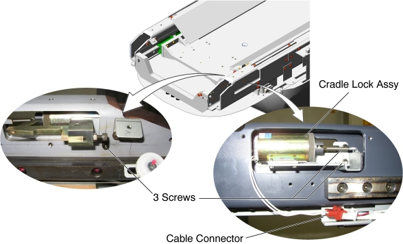
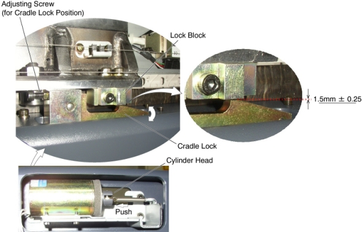

Operating Documentation
Direction 5193575-800, Rev# 5
LightSpeed 7.X Service Information - Adv
Operating Documentation |
| Required Persons | Preliminary Reqs | Procedure | Finalization |
|---|---|---|---|
| 1 |
| Last Revised: | 05 June 2008 |
| Item | Qty | Effectivity | Part# | Manufacturer | |
|---|---|---|---|---|---|
| Cradle Lock Assembly (for Global PET/CT Table, with fixed position IMS) | 1 | - | 5127778 | - | |
| Cradle Lock Assembly (for Global PET/CT Table) | 1 | - | 5127778 | - | |
| Cradle Lock Assembly (for GT2000) | 1 | - | 5127778 | - | |
| Cradle Lock Assembly (for GT1700) | 1 | - | 5133504 | - | |
Raise the Table to maximum height.
Move the Cradle and IMS to OUT limit position.
(For Global PET/CT Table, with fixed position IMS) Move the Cradle to OUT limit position.
(For Global PET/CT Table) Move the Cradle and IMS to OUT limit position.
(For GT1700 and GT2000 Table) Move the Cradle and IMS to OUT limit position.
Remove power from Table by turning off 120VAC, Axial Drive and HVDC switches on Service Switch Panel.
Remove the following Table covers:
Top Cover (Right/Left)
Rear Top Cover
Rail Cover (Right)
Disconnect the Lock Assy cable connector.
Unscrew 3 screws, and remove the Lock Assy from the Table.
Illustration 1: Cradle Lock Assy Removal

Install the new Lock Assy into place, and tighten the 3 screws.
Push the cylinder head to release the cradle lock, and verify that the gap between the lock block and the cradle lock is 1.5mm ± 0.25.
If not, adjust the lock block position, or/and adjust the cradle lock position using adjusting screw.
Illustration 2: Cradle Lock Adjustment

Release the cylinder head, and verify that the cradle locking function works well.
Connect the Lock Assy cable connector.
Re-install the Table covers.
Power up the Table from the Service Switch Panel.
Verify that the cradle IN/OUT function is operating normally.